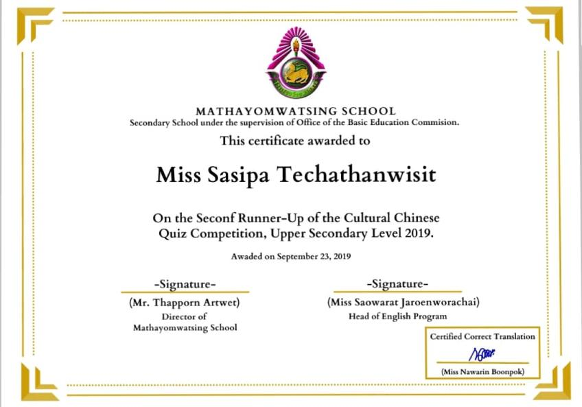
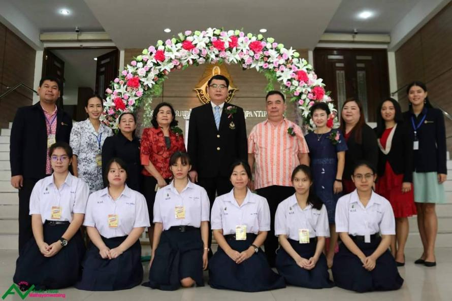

I AM SUANG
SASIPA TECHATHANWISIT
(郑宣宣)
A beautiful day begins with a beautiful mindset.
A beautiful day begins with a beautiful mindset.
My name is Suang and I graduated high school from Mathayomwatsing School in the English Program.
I was born and raised in Bangkok. I am lucky that my father is half Thai-Chinese ,so I am familiar
with Chinese culture. I am passionate about coding and languages are something I really dream for.
Moreover, I am interested in golf, travel, Kung Fu, and Chinese culture. Furthermore, I have acquired
a lot of skills that couldn't be found in the classroom, which are teamwork skills, interpersonal skills,
communication, and creativity. Lastly, I work hard to be a computer science college student. Although
I am not the cleverest student at coding, I believe in myself I will enhance my skills and knowledge to be
successful one day.
1. Sibsong Wittaya School
Kindergarten 1-2
2. Assumptionsuksa School
Kindergarten 3-Grade3
3. Sunflower Trilingual School
Grade 4-6
4. Mathayomwatsing School
Grade 7-9 and Grade 11-12
5. Assumption Convent School
Grade 10
In this digital age, computer science is significant. It is a dynamic and rapidly growing area that has become an integral part of the world that we live in today. Nowadays, people use all kinds of digital technology as a basic necessity and most industries rely on data and software programmes.
Technology is part of our future with the fast changing connected world, computer science is a key area for future careers across the world. It will improve the lives of millions of people by developing software programmes. Furthermore, to create new technologies for future benefits and next generations.
Creating high-quality computing solutions is a highly creative activity, and computing supports creative work in many other fields. Therefore, it provides a great window of creative opportunity for a professional. It can use the creative mind as well as the scientific mind toward the future of innovation.
1. Certificate for participated in spelling bee competition (2021)
2. Certificate Chinese training (2018)
3. Gold medal: The winner of Skit competition (2018)
4. Gold medal: Skit competition (2018)
5. Second runner-up of Chinese culture quiz competition (2020)
6. Outstanding student leadership (2018)
1. Attended to learn Kung Fu (2018)
2. Attended the reception of the prize at the Skit competition (2020)
3. Attended to AFS preparation camp (2019)
4. Participated in Chinese dance (2018)
5. Staff for a storytelling competition (2020)
6. Participated Summer camp in China (2018)
33/17 moo5 Khok Krabue, Mueang Samut Sakhon, Samut Sakhon 74000